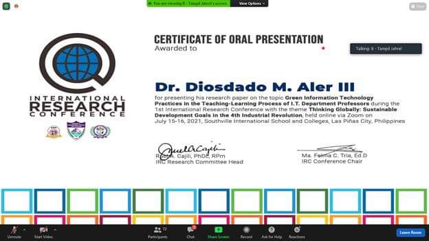
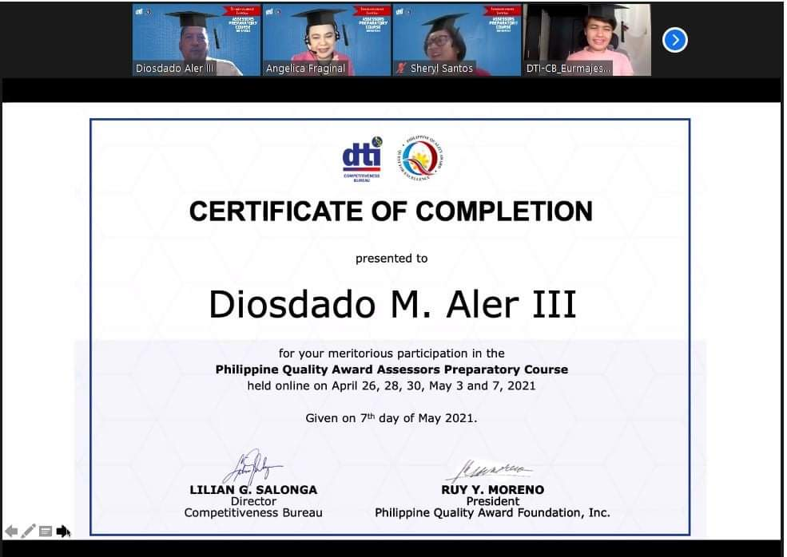
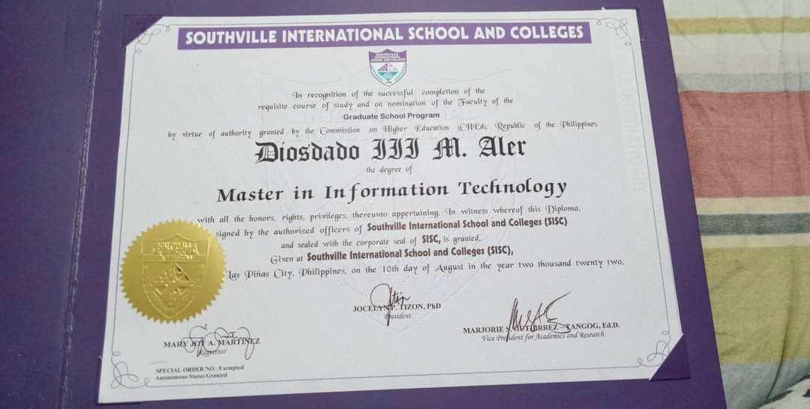
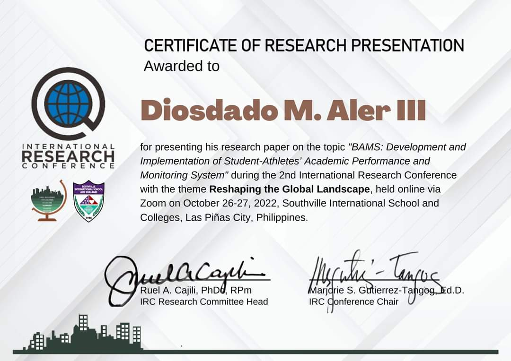
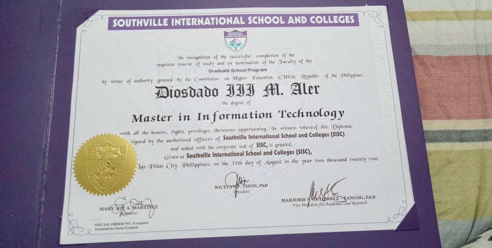
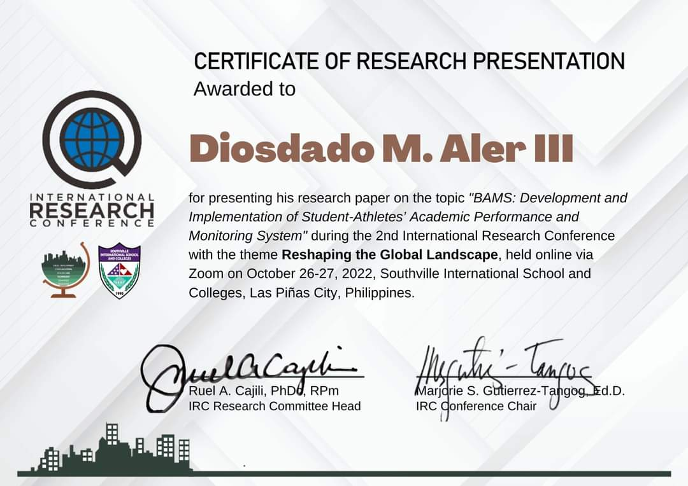

Plague of Honor in San Beda College, (July 11, 2021)

Certificate of Oral Presentation, Green information technology Practices in the teaching-learning process of I.T Department Professors. (July 15 & 16, 2021)

Philippine Quality Award Assessors Preparatory Course, May 7, 2021

Master in Information Technology at Southville International School and Colleges (SISC), August 10 2022

First Place - Paper Presentation (Technology, Engineering and Sciences Category , 3rd International and Annual Convention – Philippine Association of Extension Program Implementers (PAEPI-Global), Bahay Kalinaw University of the Philippines Diliman, Quezon City,
February 22-23, 2016

Certificate of Research Presentation "BAMS Development and implementation of student-athletes' Academic Performance and monitoring system", Nov 20, 2022
Philippine Quality Award Assessors Preparatory Course, May 7, 2021

Master in Information Technology at Southville International School and Colleges (SISC), August 10 2022
First Place - Paper Presentation (Technology, Engineering and Sciences Category , 3rd International and Annual Convention – Philippine Association of Extension Program Implementers (PAEPI-Global), Bahay Kalinaw University of the Philippines Diliman, Quezon City,
February 22-23, 2016

Certificate of Research Presentation "BAMS Development and implementation of student-athletes' Academic Performance and monitoring system", Nov 20, 2022